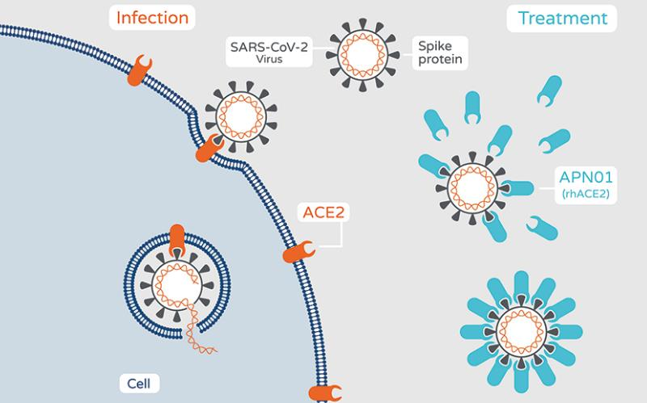

让新冠疫苗板块集体跌停的神药-APN01
这可能是新冠病毒最终的答案，它的出现，让新冠疫苗板块集体跌停，他的出现，有可能终止新冠病毒！这就是神药-APN01！
先来看国内的相关报道：
下面我们来解读到底什么是APN01？
Apeiron Biologics AG是奥地利第一家开发癌症免疫疗法的生物技术公司，Aperion的总部位于奥地利维也纳，专门从事针对癌症和呼吸道疾病的新型免疫疗法的发现，开发和商业化。

Apeiron宣布了其临床候选药物APN01（rhsACE2）令人鼓舞的数据，用于治疗重症COVID-19。该病例涉及一名入院的45岁老妇，她患有肺炎并检测出COVID-19呈阳性。
此项研究结果发表在“柳叶刀呼吸医学”（The Lancet Respiratory Medicine）上。
患者入院，有咳嗽，虚弱，肌痛，发烧和呼吸困难的7天病史。她还有4天的恶心和腹泻病史。第二天，患者的病情恶化，她被戴上呼吸机。
主治医师，家庭和传染病专家共同商定了同情疗法。由Apeiron开发的一种研究治疗药物APN01开始每天两次静脉输注5分钟。研究人员报告该患者在数小时内发热。第二天，患者体温升高，提示细菌性肺炎，她接受了头孢呋辛治疗。
随着长期住院，患者还处理了一些并发症，包括对甲氧西林敏感的金黄色葡萄球菌（MSSA）。研究人员写道：“ hrsACE2 [APN01]的治疗已按计划进行了7天，并且耐受性良好，没有明显的药物相关副作用。”
从本案例研究中获得的有关APN01输注的一些主要收获包括：在研究期间内，多种疾病相关炎症介质的水平逐渐降低。APN01的输注还与可检测到的病毒血症的快速丧失和气管样品和鼻咽互换中病毒滴度的降低略有延迟有关。APN01输注与适应性免疫应答以及针对SARS-CoV-2的高滴度中和抗体的发展完全兼容。
“通过缓慢解决肺炎并反复检测气管吸痰和产气肠杆菌中的MSSA，使她的临床过程复杂化细菌血症，她的抗生素改为利奈唑胺和氨曲南，”研究人员写道。她的临床状况逐渐好转，在基线后第21天进行了拔管。然后将该患者转入神经康复治疗，以治疗重症肌病，经物理治疗后得到改善。”在医院治疗57天后，她出院了。
APN01是人血管紧张素转化酶2（rhsACE2）的重组形式，并且该化合物是重要的严重急性呼吸系统综合症SARS-CoV-2受体，作为肾素-血管紧张素系统的调节剂，可保护包括肺在内的多个组织免受伤害。
”ACE2在COVID-19研究和药物开发中处于核心地位，”传染病学/临床Favoriten博士的主要作者Alexander Zoufaly博士说：“在这种情况下，我们现在提供了有关患者体内可溶性ACE2治疗的首批数据。 SARS-CoV-2感染。这种命名的患者使用的结果令人鼓舞，并支持在临床试验中进一步探索APN01作为治疗COVID-19的疗法的理由。”
APN01正在公司赞助的第二阶段试验中，正在奥地利，德国，丹麦，英国和俄罗斯进行，预计将扩展到美国。这项双盲，随机，安慰剂对照研究旨在治疗200例严重COVID-19疾病患者。
- 上一篇：世界上十大最危险病毒,新冠病毒榜上无名！ 2020/10/9
- 下一篇：重复使用口罩，须做到“三要三不要”！ 2020/9/3